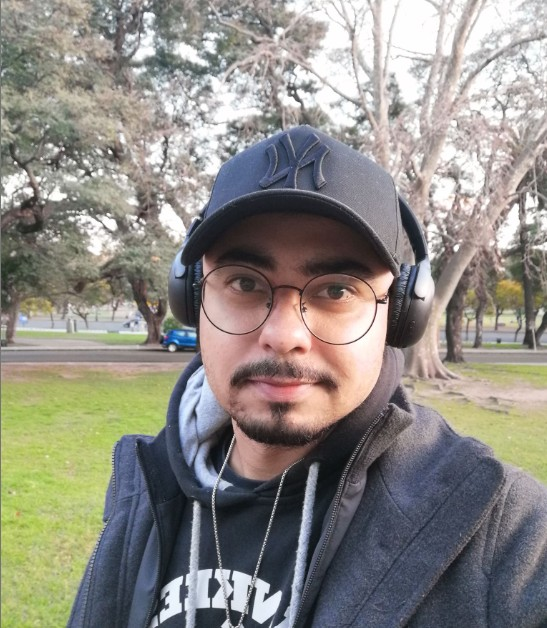

Engenheiro de Computação formado pelo Instituto Militar de Engenharia (IME) com especialização em Guerra Cibernética pelo CIGE/Exército Brasileiro. Mais de 10 anos de experiência integrando Segurança da Informação, desenvolvimento de software e arquitetura de soluções tecnológicas.
Trajetória que une atuação estratégica em CSIRT governamental (Exército Brasileiro), liderança técnica em produto SaaS de grande escala (Gupy — milhões de usuários), docência universitária em Cloud Computing e DevOps (UniCEUB) e empreendedorismo digital (Leal Cyber).
Atualmente focado na criação de soluções digitais completas — do SaaS à automação de processos — combinando segurança por design, Spec Driven Development (SDD) e tecnologias modernas como Python, n8n e cloud computing.
Python, C#, C++, JavaScript, SQL
AWS, Azure, Docker, Kubernetes, Terraform, Ansible, CI/CD
WAF, SAST/DAST, SIEM, Gestão de Vulnerabilidades, LGPD, Threat Modeling, Pentest, Resposta a Incidentes, Forense, Guerra Cibernética
Python (FastAPI, Django, Flask), SDD, APIs REST, Microsserviços
n8n, Workflow Automation, Integração de APIs
Spec Driven Development (SDD), Desenvolvimento Seguro (SDL), Scrum, DevOps
MSSQL, PostgreSQL, MySQL
Git, Wireshark, Burp Suite, Nmap, Metasploit
Engenharia de Computação
TCC: Ferramenta para Detecção de Botnet Baseada em Algoritmos de Classificação de Aprendizado de Máquina
Guerra Cibernética — Exército Brasileiro
TCC: Exploração de vulnerabilidades presentes no protocolo Modbus
📄 Ver publicação →
Professor universitário de Cloud Computing e DevOps no UniCEUB
Estruturou a Área de Segurança da Informação da Gupy do zero (produto SaaS com milhões de usuários)
Coordenou times regionais de resposta a incidentes no CSIRT do Exército Brasileiro
Criou o IndiQR, SaaS de gestão de indicações (SDD + Python) como produto próprio da Leal Cyber
Implantou automações com n8n para clientes corporativos
Publicou pesquisa acadêmica sobre exploração de vulnerabilidades no protocolo Modbus (ICS/SCADA)